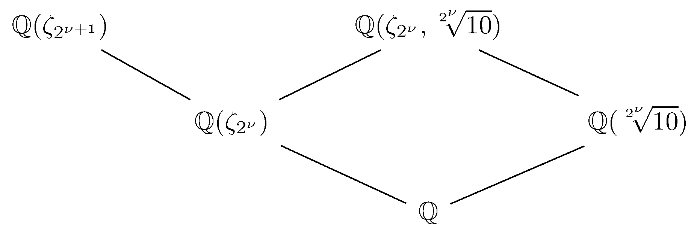
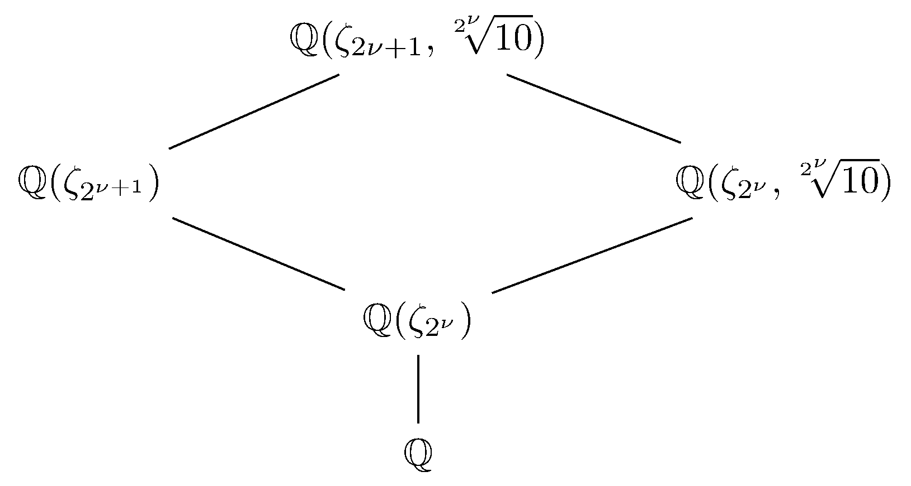

April 11th
Today I learned a fun application of Chebotarev's theorem, from here . Namely, we compute the density (Dirichlet or natural) of primes $p$ such that the fraction $\frac1p$ has period of odd length. We will ignore $2$ and $5$ (and later lots of other primes) because they contribute nothing to the density. For other primes $p,$ the period length is the smallest positive integer $k$ such that we can write\[\frac1p=0.\overline{\text{some garbage of length }k}=\frac{\text{some garbage of length }k}{10^k-1}.\]Rearranging, this is the smallest positive integer $k$ such that $p\mid10^k-1,$ which is the multiplicative order of $10\pmod p,$ denoted $\op{ord}_p(10).$
So we are computing the density of primes $p$ such that $\op{ord}_p(10)$ is odd. The intuition is that we "probably'' need $10$ to be a quadratic residue. Namely, $\left(\frac{10}p\right)=1$ is equivalent\[10^{(p-1)/2}\equiv1\pmod p\]by the Euler criterion. This means that the order needs to divide $\frac{p-1}2,$ which is at least necessary for odd order. At least, when $p\equiv3\pmod4,$ we see $\left(\frac{10}p\right)=1$ is necessary and sufficient, but otherwise we have to push a little harder for necessity.
For brevity, let $\nu:=\nu_2(p-1).$ Note that the order must divide $p-1,$ so odd order is equivalent to order dividing $\frac{p-1}{2^\nu},$ the least common multiple (maximal) of the odd divisors of $p-1.$ By multiplicative orders, we see that $10$ has odd order if and only if\[10^{(p-1)/2^\nu}\equiv1\pmod p.\]We would like to use Chebotarev later in life, so we use a kind-of reverse Euler criterion to turn this into a prime-splitting problem. We claim the following.
Lemma. Fix a prime $p$ with $d\mid(p-1)$ and residue $k\in\FF_p^\times.$ Then $k$ is a $d$th power if and only if $k$ is a root of $x^{(p-1)/d}-1.$
This is a generalization of the Euler criterion. In one direction, if $k$ is a $d$th power, then $k\equiv\ell^d,$ so\[k^{(p-1)/d}\equiv\ell^{p-1}\equiv1\pmod p,\]so indeed $k$ is a root of $x^{(p-1)/d}-1.$
In the other direction, we do a size argument. There are at most $\frac{p-1}d$ roots of $x^{(p-1)/d}-1$ in $\FF_p,$ and every $d$th power is a root, so it suffices to show that there are $\frac{p-1}d$ total $d$th powers. For this, we recall $\FF_p^\times\cong\ZZ/(p-1)\ZZ,$ so\[d\text{th power of}\FF_p^\times\iff\text{multiple of }d\text{ in }\ZZ/(p-1)\ZZ.\]And indeed we know that there are $\frac{p-1}d$ multiples of $d$ in $\ZZ/(p-1)\ZZ.$ $\blacksquare$
The lemma is helpful because now we get say that $10^{(p-1)/2^\nu}$ is odd if and only if $10$ is a $2^\nu$th power in $\FF_p^\times.$ This second condition is closer to a Chebotarev application because it is equivalent to saying\[x^{2^\nu}-10\]has a linear factor$\pmod p,$ which Dedekind-Kummer can help with. Stringing everything together, we have the following.
Proposition. For given $\nu$ and over primes $p$ with $\nu=\nu_2(p-1),$ the fraction $1/p$ has odd period length if and only if the splitting behavior of $p$ in $\QQ(\sqrt[2^\nu]{10})$ has a degree-$1$ factor, for all but finitely many $p.$
The above discussion says that it suffices to show $x^{2^\nu}-10$ has a linear factor if and only if $\QQ(\sqrt[2^\nu]{10})$ has $p$ split into a linear factor, for all but finitely many primes. We note that $x^{2^\nu}-10$ is $2$-Eisenstein, so we set $\alpha:=\sqrt[2^\nu]{10}$ a root.
Then Dedekind-Kummer says that, for all but finitely many primes $p,$ the splitting behavior of $p$ in $\QQ(\alpha)$ matches with the factorization of $x^{2^\nu}-10\pmod p.$ In particular, the factorization has a linear factor if and only if $p$ splits into a degree-$1$ factor in $\QQ(\alpha).$ This completes the proof. $\blacksquare$
This more or less finishes the set up for the density computation. We very quickly give a heuristic argument for the density we want. Note that $\nu_2(p-1)=\nu$ is equivalent to $p\equiv1+2^\nu\pmod{2^{\nu+1}}$ and so happens about\[\frac1{\varphi\left(2^\nu+1\right)}=\frac1{2^\nu}\]of the time. Additionally, it is reasonable to expect that we actually need the polynomial has a linear factor with probability $\frac1{2^\nu}$ (because it's degree is $2^\nu$), so we expect the total density to be\[\sum_{\nu=1}^\infty\frac1{2^\nu}\cdot\frac1{2^\nu}=\sum_{\nu=1}^\infty\frac1{4^\nu}=\frac13.\]This is indeed the density we find experimentally.
However, this argument is far from rigorous. Note that the splitting field of $x^{2^\nu}-10$ must contain $\zeta_{2^\nu}\sqrt[2^\nu]{10}$ and $\sqrt[2^\nu]{10}$ and therefore $\zeta_{2^\nu}.$ But the elements $\zeta_{2^\nu}$ and $\sqrt[2^\nu]{10}$ already forces the field to contain all roots of $x^{2^\nu}-10$ (which look like $\zeta_{2^\nu}^\bullet\sqrt[2^\nu]{10}$), so $\QQ(\zeta_{2^\nu},\sqrt[2^\nu]{10})$ is our splitting field. We have the following field diagram.

Fix $p\in\ZZ$ a prime of interest—one with $p\equiv1+2^\nu\pmod{2^{\nu+1}}$ and a linear factor in $\QQ(\sqrt[2^\nu]{10}).$ We try to build a clean necessary condition, and then we'll show that it is actually sufficient.
Let $\varphi$ be any Frobenius element associated to $p$ up in $\QQ(\zeta_{2^\nu},\sqrt[2^{\nu}]{10}).$ Because $p\equiv1\pmod{2^\nu},$ we know $p$ splits completely in $\QQ(\zeta_{2^\nu}),$ so the Frobenius of $p$ must be the identity there. Thus, $\varphi$ restricts to the identity on $\QQ(\zeta_{2^\nu}).$
For brevity, let $G:=\op{Gal}(\QQ(\zeta_{2^{\nu}},\sqrt[2^\nu]{10}))$ and $H$ be the subgroup fixing $\QQ(\sqrt[2^\nu]{10}).$ If $p$ has a degree-$1$ factor in $\QQ(\sqrt[2^\nu]{10}),$ then we can track the Frobenius in the intermediate field to say that there is some $\sigma\in G$ so that\[H\sigma=H\sigma\varphi.\]This is equivalent to $\sigma\varphi\sigma^{-1}\in H.$ Because $H$ merely needs to fix $\QQ(\sqrt[2^\nu]{10}),$ so it suffices to fix $\sqrt[2^\nu]{10}$ alone. Rearranging, we see that\[\varphi\sigma^{-1}(\sqrt[2^\nu]{10})=\sigma^{-1}(\sqrt[2^\nu]{10}).\]However, $\sigma^{-1}$ needs to take $\sqrt[2^\nu]{10}$ to some other root of $x^{2^\nu}-10,$ so say $\sigma^{-1}(\sqrt[2^\nu]{10}):=\zeta_{2^\nu}^\bullet\sqrt[2^\nu]{10}.$ Plugging this all in, we see\[\zeta_{2^\nu}^\bullet\sqrt[2^\nu]{10}=\varphi\left(\zeta_{2^\nu}^\bullet\sqrt[2^\nu]{10}\right)=\varphi\left(\zeta_{2^\nu}^\bullet\right)\varphi\left(\sqrt[2^\nu]{10}\right).\]But $\varphi$ must already fix $\zeta_{2^\nu}$ from earlier, so cancelling this, $\varphi$ must actually fix $\sqrt[2^\nu]{10},$ so we see that $\varphi$ is actually the identity. Thus, $p$ actually splits completely in $\QQ(\zeta_{2^\nu},\sqrt[2^\nu]{10}).$
So we have the following.
Proposition. For given $\nu,$ over primes $p$ with $\nu=\nu_2(p-1),$ the fraction $1/p$ has odd period length if and only if we have that $p$ splits completely in $\QQ(\zeta_{2^\nu},\sqrt[2^\nu]{10})$ for all but finitely many $p.$
The above discussion gives the forwards direction. For the backwards direction, we see that if $p$ splits completely in $\QQ(\zeta_{2^\nu},\sqrt[2^\nu]{10}),$ then it splits completely in $\QQ(\sqrt[2^\nu]{10})$ as well, so all of its factors are degree-$1.$ $\blacksquare$
It remains to fully incorporate the $\nu=\nu_2(p-1)$ condition into the prime-splitting. For this, we have to move up to $\QQ(\zeta_{2^{\nu+1}},\sqrt[2^\nu]{10}).$ This extension is Galois over $\QQ$ because it is the splitting field of $\left(x^{2^\nu}-10\right)\left(x^{2^{\nu+1}}-1\right).$ We have the following diagram.

Now, fix a prime $p$ of odd period length and (for all but finitely many $p$) consider the Frobenius\[\left(\frac{\mathbb Q(\zeta_{2^{\nu+1}},\sqrt[2^\nu]{10})/\QQ}p\right).\]By restriction, this has to fix $\mathbb Q(\zeta_{2^\nu},\sqrt[2^\nu]{10})$ because of the above proposition. However, $p\equiv1+2^\nu\pmod{2^{\nu+1}},$ so by classification of the Frobenius in cyclotomic fields, the Frobenius had better take $\zeta_{2^{\nu+1}}$ to $-\zeta_{2^{\nu+1}}$ as well.
However, these completely determine an automorphism of $\mathbb Q(\zeta_{2^{\nu+1}},\sqrt[2^\nu]{10})/\QQ,$ so the Frobenius of $p$ now has only one option! And $p$ needs to have some Frobenius, so this must be a valid automorphism. Note further that this restriction on the Frobenius is necessary as well as sufficient, for if the Frobenius is as given, it fixes $\QQ(\zeta_{2^\nu},\sqrt[2^\nu]{10})$ and gives $p\equiv1+2^{\nu}\pmod{2^{\nu+1}},$ which we know to be sufficient.
Finally applying Chebotarev's theorem, we see that for given $\nu:=\nu_2(p-1),$ the density (intentionally and legally ignoring a finite set of primes) of the primes of odd cycle length will be\[\frac1{\#\op{Gal}\left(\mathbb Q(\zeta_{2^{\nu+1}},\sqrt[2^\nu]{10})/\QQ\right)}=\frac1{\left[\mathbb Q(\zeta_{2^{\nu+1}},\sqrt[2^\nu]{10}):\QQ\right]}\]because we just showed that the odd cycle length is equivalent to prescribed Frobenius. To compute the required degree, we assert without proof that $\QQ(\zeta_{2^{\nu+1}})\cap\QQ(\sqrt[2^\nu]{10})=\QQ,$ which I am too lazy to think about very hard. Because $\QQ(\zeta_{2^{\nu+1}})/\QQ$ is a Galois extension, it follows that $\QQ(\zeta_{2^{\nu+1}})$ and $\QQ(\sqrt[2^\nu]{10})$ are linearly disjoint, so\[\left[\mathbb Q(\zeta_{2^{\nu+1}},\sqrt[2^\nu]{10}):\QQ\right]=\left[\mathbb Q(\zeta_{2^{\nu+1}}):\QQ\right]\left[\mathbb Q(\sqrt[2^\nu]{10}):\QQ\right].\]We can compute this as $\varphi\left(2^{\nu+1}\right)\cdot2^\nu=4^\nu.$
Now, we would like to sum over all possible $\nu:=\nu_2(p-1)$—note that $\nu \gt 0$ because all primes but $2$ are odd—to get a density of $\sum_{\nu=1}^\infty\frac1{4^\nu}=\frac13.$ This is numerically correct, but we have to be more careful in this evaluation because Dirichlet density doesn't respect countable unions; for example, union the density-$0$ sets $\{p\}$ over all primes $p.$
To fix this, we note that the countable union we are trying to do has its later terms vanish in density very quickly, so we can increasingly ignore them when approximating the total density. We can make this intuition rigorous.
Theorem. The density of primes $p$ such that the decimal expansion of $1/p$ has an odd cycle length is $\frac13.$
Instead of summing over all $\nu$ at once, we fix a large positive integer $N$ and sum $\nu\le N.$ Dirichlet density does let us union over finitely many sets, and we note that these sets are disjoint because they have disjoint $\nu_2$ in their primes. That is, the density of primes $p$ with $1/p$ of odd period length with $\nu_2(p-1)\le N$ is\[\sum_{\nu=1}^N\frac1{4^\nu}=\frac14\cdot\frac{1-1/4^N}{1-1/4}=\frac{1-1/4^N}3.\]Pretending we don't know anything about primes with $\nu_2(p-1) \gt N,$ we can bound the total Dirichlet density below by exactly the above quantity (adding no primes), and we can bound the total Dirichlet density above by adding in all primes with $\nu_2(p-1) \gt N.$ This second case is equivalent to $p\equiv1\pmod{2^{N+1}},$ which has density\[\frac1{\varphi\left(2^{N+1}\right)}=\frac1{2^N}.\]Thus, the total density lives lives in the interval\[\left(\frac13-\frac1{3\cdot4^N},\frac13-\frac1{3\cdot4^N}+\frac1{2^N}\right)=\left(\frac13-\frac1{3\cdot4^N},\frac13+\frac{3-1/2^N}{3\cdot2^N}\right).\]We note that $\frac13$ is certainly in there, and the errors vanish as we take $N\to\infty,$ so we conclude that the density must actually be equal to $\frac13.$ $\blacksquare$